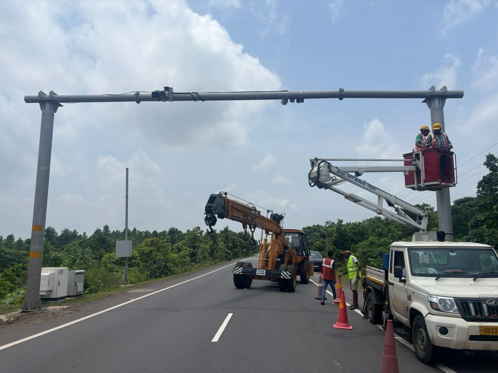
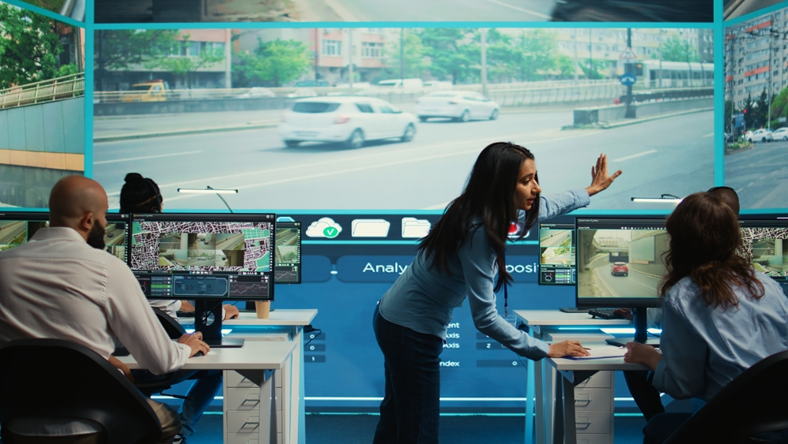

Intelligent Enforcement Management System (IEMS)
Building Smarter Roads. Saving Lives.
PROJECT AT A GLANCE
THE SOS INFOCITY SOLUTION
🚦 Roadside Infrastructure
🤖 AI-Based Enforcement
🖥 Command & Control
SOLUTION ARCHITECTURE
Roadside Capture
AI Cameras & Multi-Lane Speed Radars
Field Infrastructure
U-Shape Gantries & Junction Boxes
Network Backbone
Underground Fiber & Encrypted Link
Command Center (UCCC)
AI Analytics & Verification Consoles
Gov Ecosystem
Sync with VAHAN & e-Challan
ENGINEERING EXCELLENCE

Heavy-Duty Gantries & Structural Engineering
Heavy-duty structural gantries designed for extreme weather calibration and structural safety.
VMD Vehicle Messaging Systems
Real-time Variable Message Displays (VMD) delivering live speed advisories and automated traffic warnings.
Power Resilience & Network Integration
Solar-powered field units backed by industrial UPS systems and dedicated OFC lines.
24×7 OPERATIONS & SLA MANAGEMENT
UNIFIED COMMAND & CONTROL CENTRE (UCCC)
Command Center Facility
State-of-the-art facility featuring operator consoles and video wall integration.
Real-Time Analytics & BI Dashboard
Centralized executive dashboard displaying traffic metrics and e-Challan stats.

24×7 Live Surveillance Screen
High-resolution live monitoring feeds powered by AI video analytics engines.
BUILDING THE FUTURE OF SMART MOBILITY
Delivering integrated roadside infrastructure and AI enforcement to build safer, smarter roads.
Let's Build Safer Roads Together
Contact SOS Infocity Experts